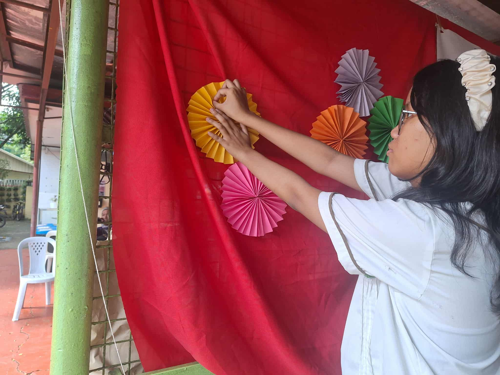
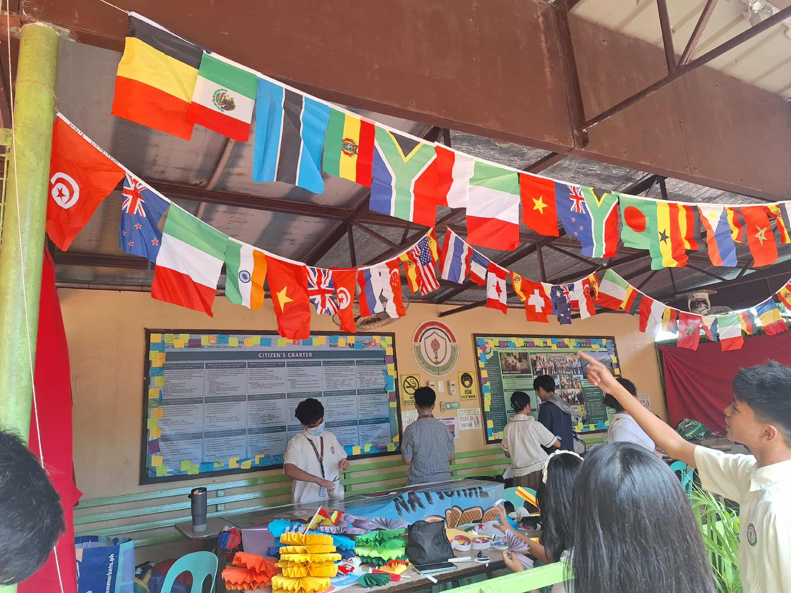

Araling Panlipunan Month
What I was able to learn from this event was more about hoe the borders in the waters worked and more about the situation in the West Philippine Sea thanks to the orientation given on it through this month. I can use this in real life by possibly educating more people to bring more awareness to the ongoing situation in the West Philippine Sea. How I'd do that is by explaining the simple facts of the situation, how it affects us, etc. The only participation I had in this event was the mandatory seminar/orientation given about the WPS, so outside of that, I didn't really participate that much. The importance of this event was that it was able to highlight the situation of the WPS and bring out the best of the A.P. subject this month through the UN celebration aswell.
Credits to Allison Pineda and Bela Paguigan for the vids and pics!

